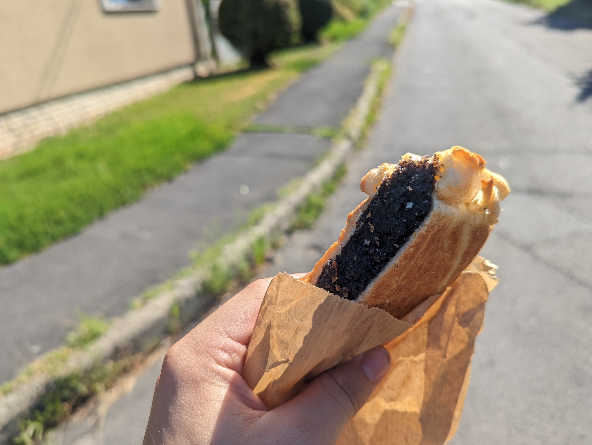

Už začíname chytať bronz
Keszthély
Keszthély
Dnes oddychujeme. Ku Balatonu nás viaže už niekoľkoročná letná tradícia, a preto sme sa rozhodli, že využijeme toto miesto na znovunadobudnutie stratených síl a preskúmanie lokálnych pamiatok a miestnej kuchyne. No skôr ako započneme naše bádanie, musíme vyriešiť života potrebné nevyhnutnosti. Bývanie a jedlo. Zamierili sme teda k recepcii kempingu. Malý presklený domček, pripomínajúci ešte časy predošlého režimu, bol od hlavy až po základy celý polepený, taktiež minulý režim pripomínajúcimi nálepkami. V búdke sedel pán približne v našom veku. Vedel perfektne po anglicky, takže nebol najmenší problém všetko vyriešiť. Síce sme mali menší pocit, že nás s cenou oklamal, nemali sme v pláne to nejako ďalej rozvádzať, Hekk sa už smažil (miestna tradičná špecialita, smažená ryba) a čakal len na nás, kedy si ho objednáme. Navštívili sme pekáreň, vždy ma zaujímalo, prečo všetky pekárne mimo Slovenska majú o toľko viac zákazníkov a pobočiek. Samozrejme, poznám dôvod, keď si kúpim na Slovensku makový koláč, tak mám šťastie, ak narazím na poriadne sústo makovej plnky. Mimo slovenska mám zase šťastie, ak narazím na trochu viac cesta. Neviem, čo sa to v mojej rodnej krajine stalo, ale akonáhle človek spozná, ako to je inde, nedokáže to vrátiť späť. Dosť už ale o rečiach typu dôležitosti chrústa, naše ďalšie kroky smerovali k jasnému cieľu. Jazero Balaton bolo príjemne pokojné, teplé a ako sa patrí, na severnú stranu, aj poriadne bahnisté. Vo vode sme však mnoho času nestrávili, premohol nás hlad a túžba spoznávať históriu mesta. Hekk bol perfektný, gigantický a drahý, tak, ako to má byť. Po desiatich minútach presviedčania pána čašníka že nechceme biele víno, ale heslo od wifi (Wi-Fi = White wine) sme zistili, že heslo, ktoré nám dal je nefunkčné, mali sme radšej zostať pri tom víne... Následne po opustení pláže a krátkom športovom oddychu v bazéne kempu, sme zamierili do mesta. Naším prvým cieľom bol Kaštiel Keszthély, ktorý je pravdepodobne najväčšou pýchou najbližšieho okolia. Prechádzali sme sa zelenou záhradou plnou jazierok, fontán a malinkých vodopádov. I keď sme si mysleli, že sa malo niekde platiť vstupné, nakráčali sme dnu a nikto nás nezastavil. To, čo sme ušetrili na vstupenkách sme minuli v miestej kaviarni s pomerne dosť dobrou kávou a Patrícii, do ktorej sa zrejme prevtelil duch nejakej pyšnej grófky, nevyhovujúcimi zákuskami. Keď sme prechádzali centrom mesta, akurát sme natrafili na slávnostný sprievod, predvádzajúci maďarskú tradičnú hudbu a tance. Navštívili sme múzeum. Pri míňaní reštaurácie, kde sme včera večerali, mi skrsol v hlave nápad skontrolovať, schválne koľko sme to včera zaplatili. A skutočne, zaplatili sme asi o 40 eur menej. Oslovili sme teda čašníka, ktorý nás predošlý deň obsluhoval a nebol asi nikdy šťastnejší, ako keď nás mohol opäť skasírovať. Ešte raz nám poďakovali a my sme spokojní a s na pol trpkým úsmevom odchádzali o 40 eur ľahší. Nuž bolo to správne... Po toľkom chodení nám už aj začalo brumkať v bruškách, vyhľadali sme teda priemerne lacnú reštauráciu a brušká naplnili dosýta burgrom, Paťka aj palacinkami a spoločne fľašou vína. Náš večer pokračoval v skratke tak, že sme sa zviezli na Ruskom kole s výhľadom na nočný Balaton. Takže sme nevideli nič. Ukecali sme pána prenajímajúceho krikľavo svietiace loďky na eurovú zľavu. Plavili sa po tmavom Balatone, nechali sa fajne doštípať od komárov. Unášali sa atmosférou pokojného jazera a z diaľky tlmene znejúcou hudbou. Vykrúcali sme sa na festivalovom koncerte, stali sa na chvíľu stredobodom pozornosti s našimi netradičnými tanečnými kreáciami. A po takomto vydarenom a romantickom večeri, opäť zavítali do nášho kempu, a unavene zaspali ako dva dudky.
